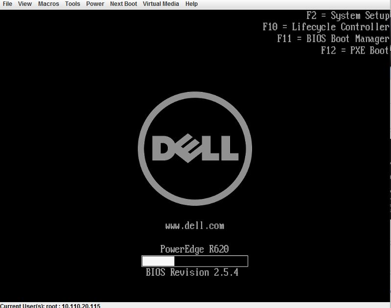
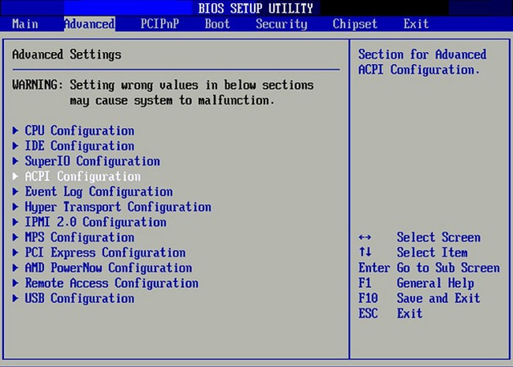
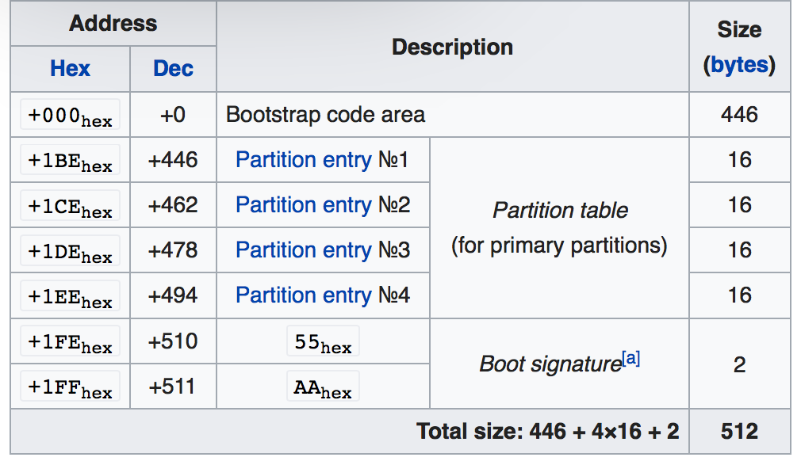

BIOS (Basic I/O System)
 
BIOS has no relation with the operating system.
Function of BIOS
1. BIOS is a hardward-dependent program that runs in real (address) mode after the computer is turned on., which means the first value of the CPU's PC register is the first instruction of BIOS program. It first runs the POST (Power On Self Test) to check if the hardware is working properly.
2. And then it issues a BIOS interrupt, INT 13H, which locates the boot sectors on any attached bootable devices, such as disks, networks.
Disk is organized with sector. The typical size of a sector is 512 bytes.
By convention, the first sector of a hard disk is called the Master Boot Record
MBR contains a table that record the logic parition of a disk, and a program that load the kernel. (In reality,
the program in MBR is limited to 400+ bytes, this is still not enough. Therefore, bootloader program is divided into
multiple part. The first part that is stored in the MBR is the first part, and its job is to load the second part to RAM.)

(figure, first sector -- MBR)
3. Load the boot sector (e.g. first part of GRUB) into RAM and transfer CPU to the RAM.
Where is BIOS?
BIOS program is stored in a EEPROM (non-volatile), BIOS setting is stored as a 64 bytes data on a CMOS chip (data kept by battery).
If the on board battery is off, BIOS setting goes back to default.
BIOS in history
In the era of MS-DOS, the BIOS provided a hardware abstraction layer for the keyboard, display, and other input/output (I/O) devices that standardized an interface to application programs and the operating system. More recent operating systems do not use the BIOS after loading, instead accessing the hardware components directly. [Citied from Wikipedia]